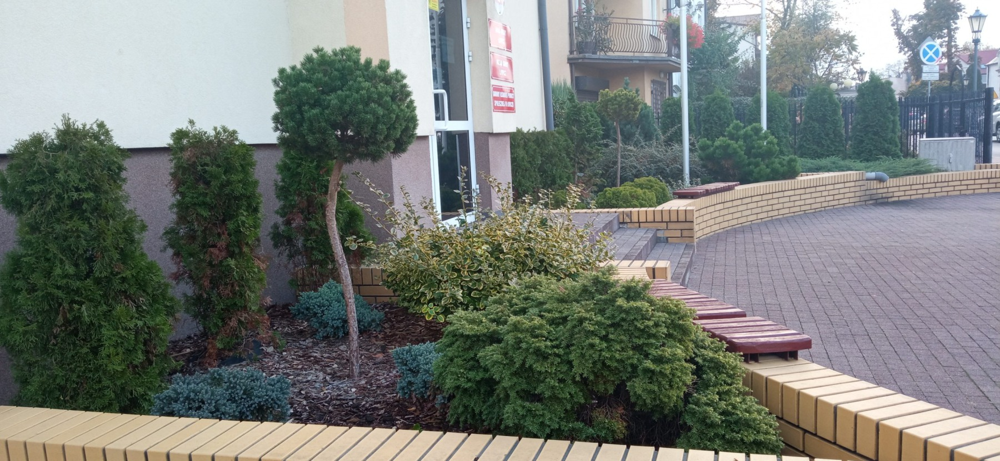

Pielęgnacja zieleni.
Oferujmy usługi: pielęgnacja i utrzymanie terenów zielonych na działkach prywatnych oraz terenach przemysłowych, sportowych oraz w miejscach publicznych. Świadczymy usługi w zakresie pielęgnacji i utrzymania terenów zieleni w cyklach wieloletnich oraz interwencyjnie.
Oferujemy takie usługi jak:
- koszenie trawy, przycinanie krzewów, żywopłotów,
- karczowanie zarośli, wykaszanie przerośniętych traw,
- cięcia formujące, odmładzające, korygujące roślin, odchwaszczanie,
- wycinka i pielęgnacja drzew, ścinka i formowanie drzew,
- sadzenie drzew i krzewów, nawożenie trawników,
- renowacja i aeracja trawników,
- ochrona chemiczna roślin przed owadami i grzybami
